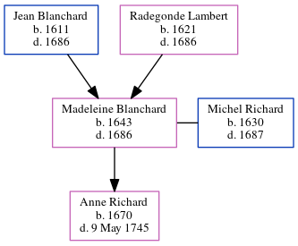

Madeleine Richard (née Blanchard) 1643 - 1686
[ Home ] | [ Calendar ] | [ Surnames Index ] | [ Census Index ] | [ Family History ]The child of Jean Blanchard and Radegonde Lambert, Madeleine Blanchard, the 9 times great-grandmother of Michele Copp (née Phillips), was born in Vicomte, Vendee, Pays de la Loire, France in 16431 and married Michel Richard (with whom she had 1 child, Anne) in Port Royal, Acadia, Nova Scotia, Canada in 16561.
She died in 1686 in Port Royal, Annapolis, Nova Scotia.
Parents
- Jean was born in 1611
- Radegonde was born in 1621
Children
- Anne was born in 1670
Citations
- U.S. and International Marriage Records, 1560-1900 Online publication - Provo, UT, USA: The Generations Network, Inc., 2004.Original data - This unique collection of records was extracted from a variety of sources including family group sheets and electronic databases. Originally, the information was deriv
Family Tree
Generated by ged2site. Last updated on Jun 10, 2024